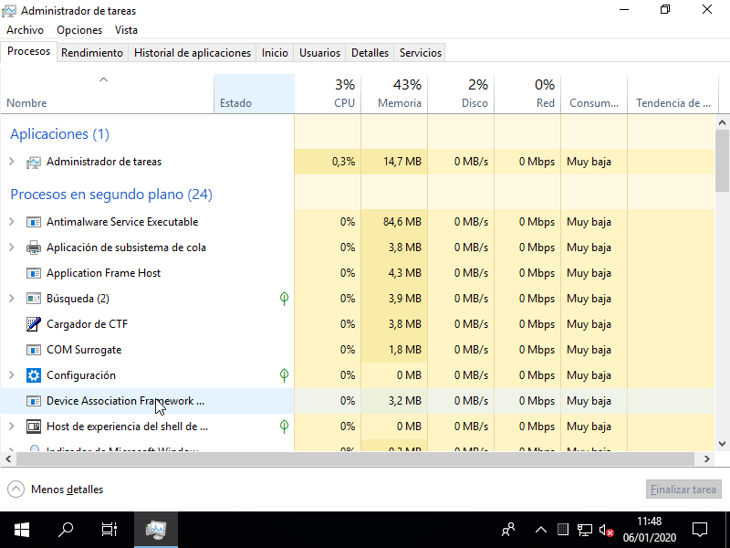

9. Administración básica de Windows 10¶
Advertencia
Los contenidos son absolutamente precarios y sólo ofrecen unas pinceladas, salvo en el caso de los permisos en que se ofrece una descripción algo pormenorizada del sistema de permisos.
9.1. Gestión de usuarios¶
Nota
Nos centramos en usuarios y grupos locales.
Hay varios modos de gestionarlos, pero el modo más compacto y completo de hacerlo es a través de la sección correspondiente de la Administración de equipos.
A grandes rasgos hay tres usuarios locales definidos:
El Administrador, desactivado (por eso no aparece en el acceso).
El Invitado, desactivado también y que se caracteriza por tener acceso limitado a las aplicaciones.
El usuario definido durante la instalación, que es un usuario administrador con capacidad para acceder a la configuración del sistema. Lo más juicioso es no usarlo habitualmente, sino crear otro sin permisos de administración.
Hay varios grupos predefinidos, aunque podemos centrarnos en:
Administradores, que son aquellos con control total sobre el equipo. El usuario definido durante la instalación pertenece a este grupo.
Usuarios, a los que se les permite llevar a cabo las tareas más habituales como ejecutar aplicaciones o imprimir.
Invitados, son usuarios con acceso limitado a los que, además, se les crea un perfil temporal que se crea al abrir una sesión y se borra al cerrarla. El usuario Invitado pertenece a este grupo.
Ver también
En este enlace de forsenergy.com se explican todos los usuarios predefinidos.
A diferencia de Linux, puede añadirse un grupo como miembro de otro.
Los usuarios tienen su perfil personal en la ruta
C:\Users\nombre_usuario, de manera que:Cada vez que se crea ese directorio personal se copia el contenido de
C:\Users\Default(oculto), exactamente del mismo modo que en +Linux* se hace con/etc/skel.Se hace accesible todo el contenido que se encuentra dentro de
C:\Users\Public. Por ejemplo, si enC:\Users\Public\Desktopse añade un fichero, ese fichero lo verán todos los usuarios en su escritorio.C:\Users\nombre_usuario\NTUSER.DATalmacena la configuración personal del usuario, de suerte que cada vez que éste inicia sesión, se carga el contenido de este fichero en el registro y se aplica la configuración (p.e. cuál es la imagen de fondo de escritorio).
9.2. Seguridad¶
Windows 10 implementa un mecanismo de control de accesos DAC basado en reglas ACLs.
Para el sistema de archivos NTFS las reglas se definen en los recursos (archivos o directorios), se aplican sobre un usuario o grupo, y niegan o conceden una serie de permisos. Por supuesto, sobre un mismo recurso pueden definirse varias reglas. Además, existe el concepto de regla heredada que es una regla que se define sobre un directorio, pero que, además de afectar al propio directorio, afecta recursivamente a todos los recursos contenidos dentro de él.
Una regla ACL es aplicable a la acción de un usuario cuando es pertinente al usuario o a un grupo que contiene al usuario y los permisos que define afectan a la acción. Por ejemplo, «¿puede el usuario X crear un nuevo archivo en su carpeta de Imágenes?» implica el permiso «Crear archivos regulares dentro de un directorio» (que se ha numerado como 6 más adelante).
Hagamos antes de empezar una serie de aclaraciones:
- Regla explícita
Aquella que se ha definido directamente en el propio recurso.
- Regla heredada
Aquella que el recurso recibe por herencia de un directorio que lo contiene (o que contiene al que lo contiene), etc.
- Regla de concesión
Aquella que concede permisos.
- Regla de denegación
Aquella que niega permisos.
La correcta comprensión y creación de permisos sobre recursos implica:
Cómo crear usuarios y grupos, y cuáles son los usuarios y grupos predeterminados por el sistema (que se trató en el epígrafe anterior).
Cuando un recurso tiene definidas varias reglas de acceso, en qué orden se leen estas.
Cuáles son los permisos que sobre los objetos permite definir el sistema y cómo otorgarlos a usuarios y grupos.
Al margen de las ACL, pueden definirse de forma centralizada permisos a grupos y usuarios sobre determinadas acciones (p.e. el acceso al sistema) a través de directivas de seguridad.
9.2.1. Precedencia¶
La precedencia de las reglas viene dado por lo siguiente:
Tiene precedencia cualquier regla explícita sobre cualquuier regla heredada.
Dentro de cada grupo anterior, las reglas de denegación tienen precedencia sobre las reglas de concesión.
Poniendo estas ideas en una tabla:
Ubicación |
Carácter |
|---|---|
Explícitas |
Denegación |
Permisión |
|
Implícitas |
Denegación |
Permisión |
Ahora bien, ¿qué es lo que pasa si ninguna de las reglas es aplicable a la acción de un usuario y por tanto el sistema agota la lista de reglas ACL sin poder aplicar ninguna? En ese caso, la acción se considera denegada.
Ver también
Para una explicación más exhaustiva, puede consultar este artículo de ntfs.com.
9.2.2. Permisos¶
Los permisos sobre archivos de un sistema NTFS se definen con ACLs, por lo que podremos dar un determinado permiso a cualquier usuario o grupo definido en el sistema. La complejidad, sin embargo, deriva de que hay muchísimos más de tres permisos y de que estos se pueden conceder, denegar o no especificar. Confrontándolos con los tres permisos de UNIX, estos son los permisos avanzados que permite definir Windows sobre NTFS:
- Ejecución
Como en los sistemas UNIX, significa:
Acceder a un directorio o ejecutar un archivo regular que sea un programa.
- Lectura
En lo que indistintamente se denomina lectura en los sistemas UNIX, Windows puede llegar a distinguir varias operaciones distintas:
Leer el contenido de un archivo regular o de un directorio (en este último caso exclusivamente los nombres de los archivos que contiene)
Leer cuáles son los atributos de un archivo.
Leer cuáles son los atributos extendidos de un archivo, que son parejas nombre/valor equivalentes a lo que denominamos en Linux atributos extendidos de usuario.
Leer cuáles los permisos asociados a un archivo.
- Escritura
De nuevo, Windows distingue distintas operaciones de escritura:
Crear archivos regulares dentro un directorio o modificar el contenido de un archivo regular
Crear directorios dentro de un directorio o añadir contenido a un archivo regular sin alterar el contenido ya existente.
Modificar los atributos de un fichero.
Modificar los atributos extendidos de un fichero.
Eliminar el propio archivo.
Eliminar archivos dentro de un directorio.
- Otros
Hay por último dos permisos que en UNIX, simplemente, son privativos del propietario del archivo o el administrador:
Modificar los permisos.
Cambiar el propietario (en realidad, «Tomar posesión»).
Estos 13 permisos atómicos1, junto al de «Control total» que obtenerlos todos, son los permisos que pueden definirse a través de la interfaz de «Permisos avanzados». Sin embargo, Windows permite la definición de 6 permisos principales que incluyen a uno o varios de estos permisos atómicos y que además se solapan entre sí:
Control total, que implica los 13 permisos atómicos.
Lectura, que implica todos los permisos englobados de lectura.
Lectura y ejecución, que añade a los de lectura el permiso de ejecución.
Mostrar el contenido de la carpeta, que es el equivalente al anterior para directorios.
Escritura, que implica los permisos de escritura, excepto los dos de eliminación, así como poder leer permisos.
Modificación, que implica todos los permisos de lectura, ejecución y escritura, excepto, si se aplica sobre un directorio, el de eliminar los archivos que contiene.
E |
Lectura |
Escritura |
Otros |
||||||||||
|---|---|---|---|---|---|---|---|---|---|---|---|---|---|
1 |
2 |
3 |
4 |
5 |
6 |
7 |
8 |
9 |
10 |
11 |
12 |
13 |
|
Control total |
X |
X |
X |
X |
X |
X |
X |
X |
X |
X |
X |
X |
X |
Lectura |
X |
X |
X |
X |
|||||||||
Lectura y ejecución |
X |
X |
X |
X |
X |
||||||||
Mostrar carpetas |
X |
X |
X |
X |
X |
||||||||
Escritura |
X |
X |
X |
X |
X |
||||||||
Modificación |
X |
X |
X |
X |
X |
X |
X |
X |
X |
X |
|||
La razón por la que se puede denegar un permiso es, precisamente, debida al solapamiento de los permisos. Por ejemplo, un determinado usuario puede tener control total sobre un fichero, excepto la capacidad de cambiarle el propietario, porque se concedió el permiso de «Control total» y se denegó el de Cambiar el propietario («Tomar posesión»).
Antes de completar los comentarios sobre permisos, es pertinente citar dos aspectos:
Herencia
Los permisos pueden definirse sobre el propio archivo o venir heredados de su directorio padre (que a su vez podía heredar del suyo y así precedentemente). En principio, cuando se define una ACL para un directorio se puede especificar que la regla sea heredable. Por otra parte, también es posible en un archivo renunciar a esa herencia convirtiendo la regla en propia y eliminándola. Esta es la única forma de alterar o quitarla ya que la regla en realidad no está definida en el propio archivo, sino en un directorio antecedente.
Atributos
Los ficheros en NTFS tienen, al margen de los permisos, una serie de atributos, algunos derivados de su propia naturaleza, y otros que son aplicables por quien tenga permisos para ello:
Nombre |
Código |
Ajustable |
Descripción |
|---|---|---|---|
ReadOnly |
1 |
Gráfico |
Sólo lectura. |
Hidden |
2 |
Gráfico |
Oculto. |
System |
4 |
Consola |
Es archivo de sistema. |
Directory |
16 |
- |
Es un directorio. |
Archive |
32 |
Gráfico |
Modificado desde el último respaldo. |
Compressed |
2048 |
Gráfico[a] |
El fichero está comprimido. |
NotContentIndexed |
8192 |
Gráfico |
El servicio de indexación no indexa el fichero. |
Encrypted |
16384 |
Gráfico[a] |
El fichero está cifrado. |
- a(1,2)
En realidad el atributo no es ajustable, pero la interfaz gráfica da la posibilidad de comprimir o cifrar el fichero, por lo que como efecto colateral se aplicará el atributo.
Ver también
Para información más extensa sobre cuáles todos los atributos y su significado consulte esta documentación de Microsoft y para saber cómo alterarlos a través de la PowerShell su valor, consulte este desaparecido artículo.
9.2.3. Directivas de seguridad¶
Las directivas de seguridad permiten configurar aspectos relacionados con la seguridad del sistema. Se accede a ellas mediante el programa secpol.msc o a través de las «Herramientas administrativas». Son interesantes:
Directivas de cuenta, dentro de las cuales puede establecerse la política contraseñas (longitud, caducidad, etc.)
Directivas locales, dentro de las cuales se les puede asignar a usuarios y grupos, permiso para llevar a cabo ciertas tareas.
9.2.4. Directivas de grupo¶
Las directivas de grupo permiten habilitar o deshabilitar ciertos elementos de Windows. Las que afectan a todos los usuarios pueden configurarse a través de su editor gpedit.msc. También se pueden aplicar las directivas a usuarios concretos o conjuntos de usuarios (administradores/no administradores) mediante el uso del programa mmc.exe y eligiendo como componente el «Editor de directivas de grupo».
Ver también
Puede ver cómo llevar a cabo esto último en este tutorial.
9.3. Monitorización¶
9.3.1. Uso de recursos¶
A través del Administrador de tareas, accesible a través del menú que se presenta al pulsar Ctrl+Alt+Supr, o directamente pulsado Ctrl+Shift+Esc, o ejecutando TaskManager.exe, puede accederse a la pestaña de Rendimiento donde el sistema proporciona información sobre el aprovechamiento de distintos recursos (memoria, procesador, tarjeta de red).
9.3.2. Registro de eventos¶
9.4. Gestión de procesos¶
Para la gestión de procesos Windows 10 proporciona el Administrador de tareas. Esta aplicación dispone de distintas pestañas cada una de las cuales sirve para un propósito:
Procesos permite consultar los procesos en ejecución y cuáles son los recursos que consumen. Además, permite matarlos.
Detalles enumera los procesos indicando cuál es el ejecutable.
Servicios permite arrancar y parar servicios. Si el proceso que deseamos parar es un servicio, es preferible hacerlo usando esta pestaña.
Rendimiento nos ofrece información sobre el consumo de CPU, memoria, etc.
Inicio lista una serie de aplicaciones que se ejecutan automáticamente durante el arranque del sistema. Se permite deshabilitarlas.
Un tipo especial de procesos son los servicios, procesos asociados a una tarea que se desarrolla en segundo plano. Estas tareas normalmente son recurrentes por lo que el sistema está preparado para que, por ejemplo, se activen durante el inicio. Su gestión, por tanto, excede las prosibilidades del Administrador de tareas que nos permite únicamente cancelar puntuaLMENTE UN PROCESO. Para llevar a cabo una gestión más exhaustiva y decidir qué servicios se habilitan o deshabilitan, de manera que se levanten o no automáticamente al iniciar Windows debe recurrirse al gestor de servicios. al cual puede llegarse a través del Administrador de Equipos o directamente ejecutando services.msc.
9.5. Gestión de recursos¶
9.5.1. Discos¶
Puede llevarse a cabo a través de la «Administración de equipos» o directamente a través de diskmgmt.msc.
9.5.2. Impresoras¶
9.5.3. Compartición de recursos¶
9.6. Ejercicios sobre administración de Windows 10¶
Nota
Para entregar las prácticas, componga un documento en que explique cómo las ha llevado a cabo y adjuntando capturas que atestiguen que lo ha hecho.
Debe crearse el siguiente conjunto de usuarios en un Windows 10 nuevo:
Usuario
Nombre Largo
Contraseña
Tipo
Otros grupos
MrPotato
Señor Patata
MrPotato
Administrador
-
Prof1
Profesor 1º
Profesor1?
Administrador
Profesores
Prof2
Profesor 2º
Profesor2?
Administrador
Profesores
Alum1
Alumno 1º
Alumno1
Normal (Usuarios)
Alumnos
Alum2
Alumno 2º
Alumno2
Normal (Usuarios)
Alumnos
Para los cuales debe cumplirse lo seguiente:
Todos los usuarios verán en el Escritorio un PDF con las normas de uso llamado
normas.pdf. Los alumnos serán incapaces de modificarlo o eliminarlo, pero obviamente, sí podrán consultarlo.Un enlace directo a estos mismos apuntes.
Una carpeta llamada
TotumRevolutumcomún a todos los usuarios.Una carpeta llamada
MisCosasparticular para cada usuario (esto es, cada uno tendrá la suya).
Configure
TotumRevolutumpara que:Los alumnos no puedan eliminar la carpeta.
Los profesores y alumnos sean capaces de crear archivos regulares, pero no directorios.
Los profesores sean capaces de borrar todos los archivos.
Los alumnos no sean capaces de borrar los archivos de los demás.
Configure las directivas de seguridad local para que:
Las contraseñas deben tener una longitud mínima de 8 caracteres y y una caducidad de 30 días. Además, al tercer intento de acceso fallido se bloqueará el usaurio durante 3 minutos.
Eliminar la posibilidad de apagar si no se ha iniciado sesión.
Avisar de que la contraseña está próxima a expirar con 3 días de antelación.
Y a través de las directivas de grupo, evite que los alumnos puedan cambiar la configuración y acceder al panel de control.
Usando el Administrador de tareas:
Compruebe el consumo de CPU y de memoria del sistema.
Liste los procesos ordenados según su consumo de memoria.
Mate el Explorador de archivos, que previamente haya abierto (claro está).
Deshabilite las actualizaciones de Windows 10.
Nota
Las actualizaciones de Windows son un servicio.
Lleve a cabo las siguientes operaciones:
Cree un punto de restauración del sistema, llamado «MiSistemaConTareas».
Borre las tareas del ejercicio anterior.
Recupere el punto de restauración «MiSistemaConTareas».
Compruebe que han vuelto a recuperarse las tareas anteriores.
Notas al pie
- 1
Atómicos en el sentido de que no pueden descomponerse en otros más simples.